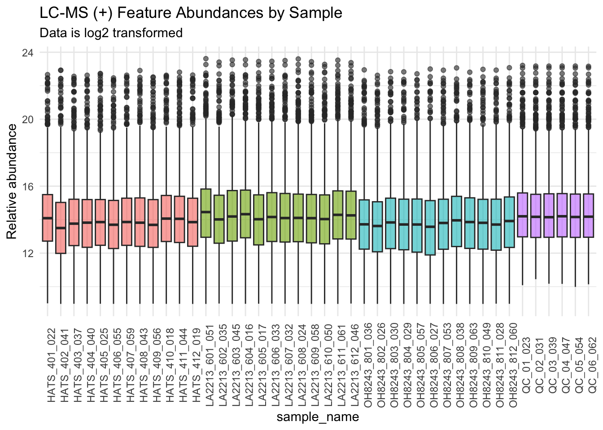
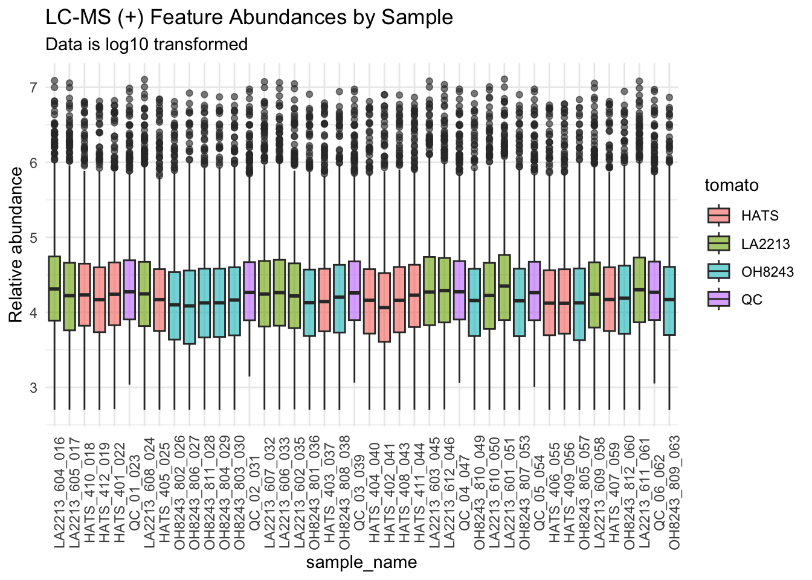
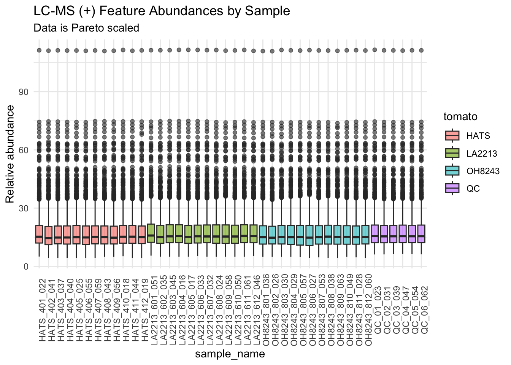
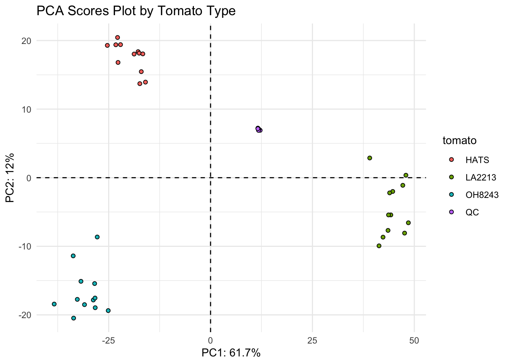
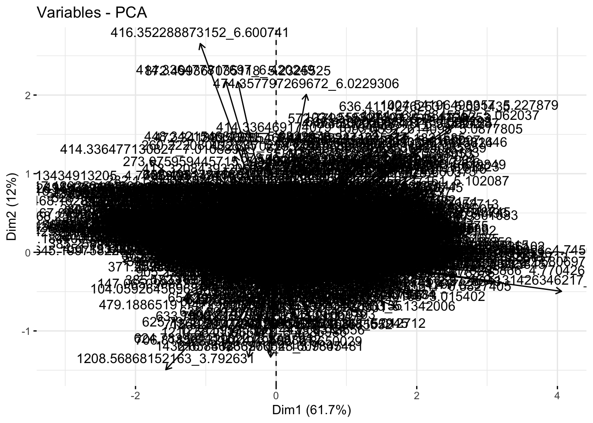
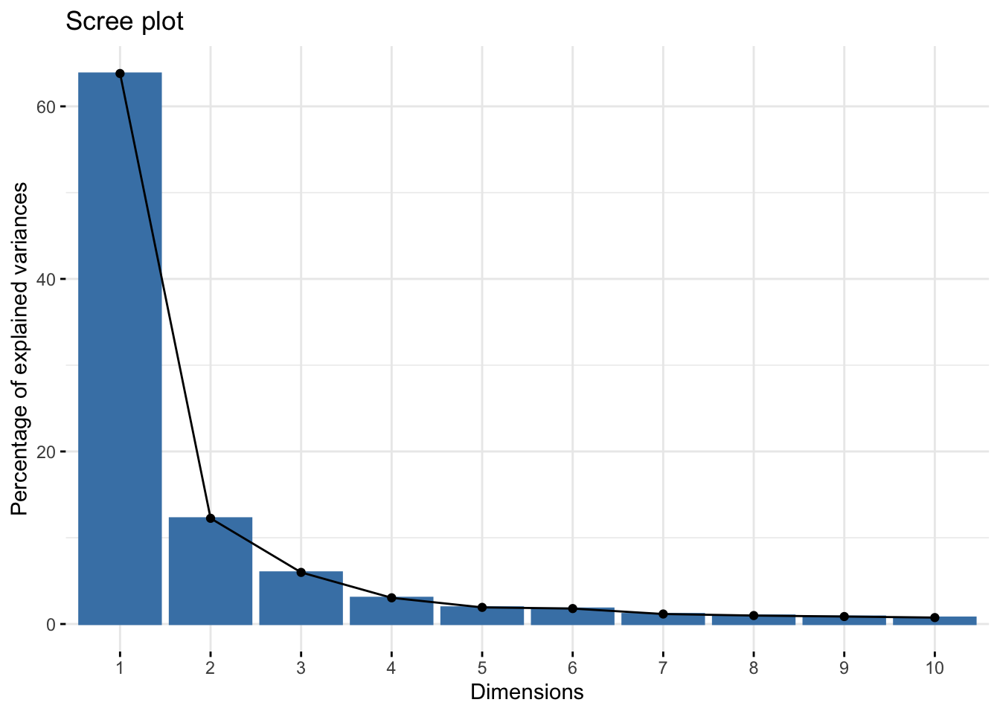
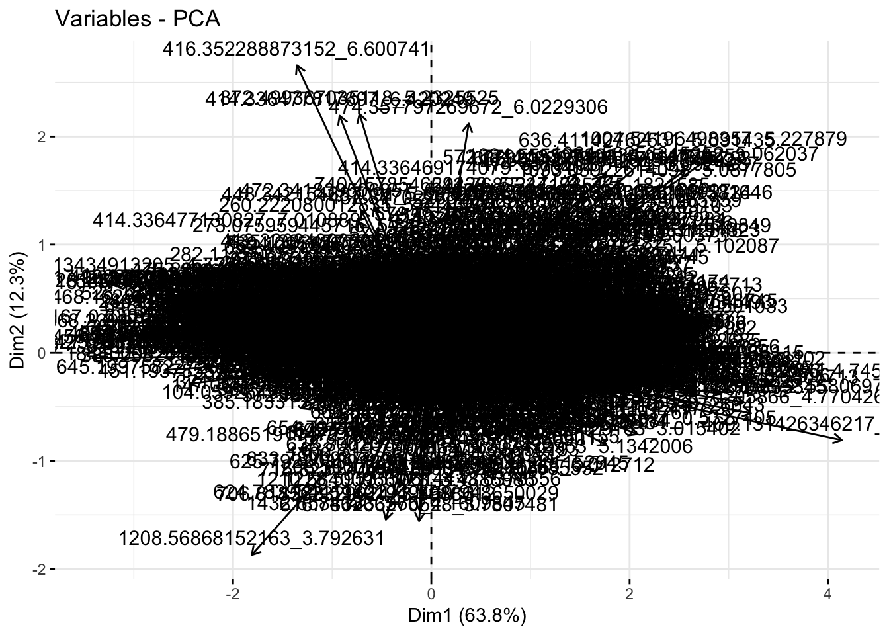
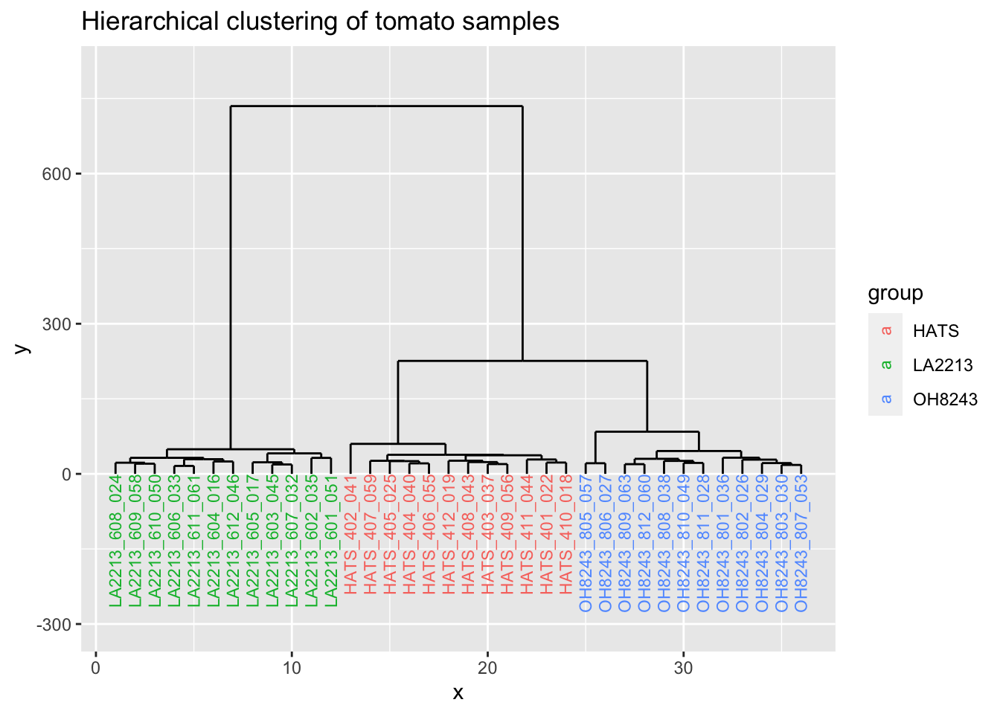

library(factoextra) # visualizing PCA results
library(glue) # for easy pasting
library(plotly) # quick interactive plots
library(proxyC) # more efficient large matrices
library(data.table) # easy transposing
library(janitor) # for cleaning names and checking duplicates
library(notame) # for collapsing ions coming from the same metabolite
library(doParallel) # for parallelizing notame specifically
library(patchwork) # for making multi-panel plots
library(rstatix) # for additional univariate functionality
library(philentropy) # for hierarchical clustering
library(ggdendro) # for hierarchical clustering plotting
library(ropls) # for pls
library(randomForest) # for random forest
library(caret) # for random forest confusion matrices
# this is at the end hoping that the default select will be that from dplyr
library(tidyverse) # for everythingData analysis with R
Introduction
We aren’t going to go over this in the workshop, but I wanted to show you an example of the workflow my team might use for doing the first pass analysis of metabolomics data. We are going to use the feature table directly from MZmine (without any filtering) and will conduct our filtering and analysis in R.
Load libraries
Once you get deconvoluted data from MZmine or similar programs, you need to wrangle your data in such a way that you can conduct your analysis on it.
Read in Data
First we want to read in our raw data. The code here is to read in data directly from MZmine.
metabdata <- read_csv(file = "data/Feature_list_MZmine_2560.csv",
col_names = TRUE) # has headersNew names:
Rows: 2560 Columns: 49
── Column specification
──────────────────────────────────────────────────────── Delimiter: "," dbl
(48): row ID, row m/z, row retention time, HATS_402_041.mzML Peak height... lgl
(1): ...49
ℹ Use `spec()` to retrieve the full column specification for this data. ℹ
Specify the column types or set `show_col_types = FALSE` to quiet this message.
• `` -> `...49`dim(metabdata)[1] 2560 49# look at beginning of the dataset
metabdata[1:8, 1:8]# A tibble: 8 × 8
`row ID` `row m/z` `row retention time` `HATS_402_041.mzML Peak height`
<dbl> <dbl> <dbl> <dbl>
1 3106 100. 2.78 26623.
2 364 101. 0.611 105494.
3 453 102. 0.641 413981.
4 5568 103. 3.98 9505.
5 2723 103. 2.54 196964.
6 1424 104. 1.07 75342.
7 397 104. 0.630 911384.
8 426 104. 0.629 2498815
# ℹ 4 more variables: `HATS_403_037.mzML Peak height` <dbl>,
# `HATS_404_040.mzML Peak height` <dbl>,
# `HATS_401_022.mzML Peak height` <dbl>,
# `HATS_408_043.mzML Peak height` <dbl># how many features do we have?
nrow(metabdata)[1] 2560Note there is no metadata included in this file. Just m/z, retention time, and a column for each sample, where values are peak heights. We are using peak height instead of peak area because it is less dependent on bad peak shape which you get sometimes with metabolomics.
colnames(metabdata) [1] "row ID" "row m/z"
[3] "row retention time" "HATS_402_041.mzML Peak height"
[5] "HATS_403_037.mzML Peak height" "HATS_404_040.mzML Peak height"
[7] "HATS_401_022.mzML Peak height" "HATS_408_043.mzML Peak height"
[9] "HATS_405_025.mzML Peak height" "HATS_406_055.mzML Peak height"
[11] "HATS_407_059.mzML Peak height" "HATS_412_019.mzML Peak height"
[13] "HATS_409_056.mzML Peak height" "HATS_410_018.mzML Peak height"
[15] "HATS_411_044.mzML Peak height" "LA2213_602_035.mzML Peak height"
[17] "LA2213_603_045.mzML Peak height" "LA2213_601_051.mzML Peak height"
[19] "LA2213_604_016.mzML Peak height" "LA2213_605_017.mzML Peak height"
[21] "LA2213_607_032.mzML Peak height" "LA2213_608_024.mzML Peak height"
[23] "LA2213_606_033.mzML Peak height" "LA2213_609_058.mzML Peak height"
[25] "LA2213_610_050.mzML Peak height" "LA2213_612_046.mzML Peak height"
[27] "OH8243_801_036.mzML Peak height" "OH8243_802_026.mzML Peak height"
[29] "OH8243_803_030.mzML Peak height" "OH8243_805_057.mzML Peak height"
[31] "LA2213_611_061.mzML Peak height" "OH8243_804_029.mzML Peak height"
[33] "OH8243_806_027.mzML Peak height" "OH8243_809_063.mzML Peak height"
[35] "OH8243_807_053.mzML Peak height" "OH8243_810_049.mzML Peak height"
[37] "OH8243_808_038.mzML Peak height" "OH8243_812_060.mzML Peak height"
[39] "OH8243_811_028.mzML Peak height" "PB_02_006.mzML Peak height"
[41] "PB_03_007.mzML Peak height" "PB_01_005.mzML Peak height"
[43] "QC_02_031.mzML Peak height" "QC_04_047.mzML Peak height"
[45] "QC_01_023.mzML Peak height" "QC_03_039.mzML Peak height"
[47] "QC_05_054.mzML Peak height" "QC_06_062.mzML Peak height"
[49] "...49" It looks like we have an extra blank column at the end - if we look at our raw data we can see OH9243_811_028 is the last sample, so I am going to remove the last column
metabdata <- metabdata[,-49]
colnames(metabdata) [1] "row ID" "row m/z"
[3] "row retention time" "HATS_402_041.mzML Peak height"
[5] "HATS_403_037.mzML Peak height" "HATS_404_040.mzML Peak height"
[7] "HATS_401_022.mzML Peak height" "HATS_408_043.mzML Peak height"
[9] "HATS_405_025.mzML Peak height" "HATS_406_055.mzML Peak height"
[11] "HATS_407_059.mzML Peak height" "HATS_412_019.mzML Peak height"
[13] "HATS_409_056.mzML Peak height" "HATS_410_018.mzML Peak height"
[15] "HATS_411_044.mzML Peak height" "LA2213_602_035.mzML Peak height"
[17] "LA2213_603_045.mzML Peak height" "LA2213_601_051.mzML Peak height"
[19] "LA2213_604_016.mzML Peak height" "LA2213_605_017.mzML Peak height"
[21] "LA2213_607_032.mzML Peak height" "LA2213_608_024.mzML Peak height"
[23] "LA2213_606_033.mzML Peak height" "LA2213_609_058.mzML Peak height"
[25] "LA2213_610_050.mzML Peak height" "LA2213_612_046.mzML Peak height"
[27] "OH8243_801_036.mzML Peak height" "OH8243_802_026.mzML Peak height"
[29] "OH8243_803_030.mzML Peak height" "OH8243_805_057.mzML Peak height"
[31] "LA2213_611_061.mzML Peak height" "OH8243_804_029.mzML Peak height"
[33] "OH8243_806_027.mzML Peak height" "OH8243_809_063.mzML Peak height"
[35] "OH8243_807_053.mzML Peak height" "OH8243_810_049.mzML Peak height"
[37] "OH8243_808_038.mzML Peak height" "OH8243_812_060.mzML Peak height"
[39] "OH8243_811_028.mzML Peak height" "PB_02_006.mzML Peak height"
[41] "PB_03_007.mzML Peak height" "PB_01_005.mzML Peak height"
[43] "QC_02_031.mzML Peak height" "QC_04_047.mzML Peak height"
[45] "QC_01_023.mzML Peak height" "QC_03_039.mzML Peak height"
[47] "QC_05_054.mzML Peak height" "QC_06_062.mzML Peak height" RT filter if necessary
You might have deconvoluted more data than you plan to use in your analysis. For example, you may want to exclude the first bit and last bit of your run, since you do not expect to have good reproducibility in those areas.
Here, we are filtering to only include features that elute between 0.5-7.5 min of this 10 min run. Let’s check what we have.
range(metabdata$`row retention time`)[1] 0.5184004 7.4863230Our data is already filtered for our desired retention time range, so we don’t need to do anything. Below is some code you could use to filter if you needed to.
metabdata_RTfilt <- metabdata %>%
filter(between(`row retention time`, 0.5, 7.5))
# did it work?
range(metabdata_RTfilt$`row retention time`)
# how many features do we have?
dim(metabdata_RTfilt)Cleaning up data
Create mz_rt
This creates a unique identifier for each feature using its mass-to-charge ratio (m/z) and retention time (RT).
MZ_RT <- metabdata %>%
rename(mz = `row m/z`,
rt = `row retention time`,
row_ID = `row ID`) %>%
unite(mz_rt, c(mz, rt), remove = FALSE) %>% # Combine m/z & rt with _ in between
select(row_ID, mz, rt, mz_rt, everything()) # reorder and move row_ID to front
# how does our df look?
MZ_RT[1:8, 1:8]# A tibble: 8 × 8
row_ID mz rt mz_rt HATS_402_041.mzML Pe…¹ HATS_403_037.mzML Pe…²
<dbl> <dbl> <dbl> <chr> <dbl> <dbl>
1 3106 100. 2.78 100.11203254… 26623. 45481.
2 364 101. 0.611 101.07092628… 105494. 104196.
3 453 102. 0.641 102.05495781… 413981. 413246.
4 5568 103. 3.98 103.05420188… 9505. 24041.
5 2723 103. 2.54 103.05422465… 196964. 232544.
6 1424 104. 1.07 104.05281547… 75342. 72664.
7 397 104. 0.630 104.05926456… 911384. 3235.
8 426 104. 0.629 104.07084507… 2498815 3274537.
# ℹ abbreviated names: ¹`HATS_402_041.mzML Peak height`,
# ²`HATS_403_037.mzML Peak height`
# ℹ 2 more variables: `HATS_404_040.mzML Peak height` <dbl>,
# `HATS_401_022.mzML Peak height` <dbl>Clean up file names
We are using str_remove() to remove some information we do not need in our sample names.
# remove stuff from the end of file names, ".mzML Peak height"
new_col_names <- str_remove(colnames(MZ_RT), ".mzML Peak height")
# did it work?
new_col_names [1] "row_ID" "mz" "rt" "mz_rt"
[5] "HATS_402_041" "HATS_403_037" "HATS_404_040" "HATS_401_022"
[9] "HATS_408_043" "HATS_405_025" "HATS_406_055" "HATS_407_059"
[13] "HATS_412_019" "HATS_409_056" "HATS_410_018" "HATS_411_044"
[17] "LA2213_602_035" "LA2213_603_045" "LA2213_601_051" "LA2213_604_016"
[21] "LA2213_605_017" "LA2213_607_032" "LA2213_608_024" "LA2213_606_033"
[25] "LA2213_609_058" "LA2213_610_050" "LA2213_612_046" "OH8243_801_036"
[29] "OH8243_802_026" "OH8243_803_030" "OH8243_805_057" "LA2213_611_061"
[33] "OH8243_804_029" "OH8243_806_027" "OH8243_809_063" "OH8243_807_053"
[37] "OH8243_810_049" "OH8243_808_038" "OH8243_812_060" "OH8243_811_028"
[41] "PB_02_006" "PB_03_007" "PB_01_005" "QC_02_031"
[45] "QC_04_047" "QC_01_023" "QC_03_039" "QC_05_054"
[49] "QC_06_062" # assign our new column names to MZ_RT
colnames(MZ_RT) <- new_col_namesWhat are our sample names?
colnames(MZ_RT) [1] "row_ID" "mz" "rt" "mz_rt"
[5] "HATS_402_041" "HATS_403_037" "HATS_404_040" "HATS_401_022"
[9] "HATS_408_043" "HATS_405_025" "HATS_406_055" "HATS_407_059"
[13] "HATS_412_019" "HATS_409_056" "HATS_410_018" "HATS_411_044"
[17] "LA2213_602_035" "LA2213_603_045" "LA2213_601_051" "LA2213_604_016"
[21] "LA2213_605_017" "LA2213_607_032" "LA2213_608_024" "LA2213_606_033"
[25] "LA2213_609_058" "LA2213_610_050" "LA2213_612_046" "OH8243_801_036"
[29] "OH8243_802_026" "OH8243_803_030" "OH8243_805_057" "LA2213_611_061"
[33] "OH8243_804_029" "OH8243_806_027" "OH8243_809_063" "OH8243_807_053"
[37] "OH8243_810_049" "OH8243_808_038" "OH8243_812_060" "OH8243_811_028"
[41] "PB_02_006" "PB_03_007" "PB_01_005" "QC_02_031"
[45] "QC_04_047" "QC_01_023" "QC_03_039" "QC_05_054"
[49] "QC_06_062" Start filtering
Check for duplicates
Sometimes you end up with duplicate data after deconvolution with MZmine. Here, we are going to check for complete, perfect duplicates and remove them. The function get_dupes() is from the package janitor.
We don’t want row_ID to be considered here since those are unique per row.
get_dupes(MZ_RT %>% select(-row_ID))No variable names specified - using all columns.No duplicate combinations found of: mz, rt, mz_rt, HATS_402_041, HATS_403_037, HATS_404_040, HATS_401_022, HATS_408_043, HATS_405_025, ... and 39 other variables# A tibble: 0 × 49
# ℹ 49 variables: mz <dbl>, rt <dbl>, mz_rt <chr>, HATS_402_041 <dbl>,
# HATS_403_037 <dbl>, HATS_404_040 <dbl>, HATS_401_022 <dbl>,
# HATS_408_043 <dbl>, HATS_405_025 <dbl>, HATS_406_055 <dbl>,
# HATS_407_059 <dbl>, HATS_412_019 <dbl>, HATS_409_056 <dbl>,
# HATS_410_018 <dbl>, HATS_411_044 <dbl>, LA2213_602_035 <dbl>,
# LA2213_603_045 <dbl>, LA2213_601_051 <dbl>, LA2213_604_016 <dbl>,
# LA2213_605_017 <dbl>, LA2213_607_032 <dbl>, LA2213_608_024 <dbl>, …We have no exact duplicate, this is great! I’m including some code that you can use to remove duplicates if you have them.
MZ_RT %>%
filter(mz_rt %in% c()) %>%
arrange(mz_rt)MZ_RT_nodupes <- MZ_RT %>%
filter(!row_ID %in% c("insert your duplicated row_IDs here"))This should remove 5 rows.
nrow(MZ_RT) - nrow(MZ_RT_nodupes) # ok goodCV function
Since base R does not have a function to calculate coefficient of variance, let’s write one.
cv <- function(x){
(sd(x)/mean(x))
}Counting QCs
Subset QCs and filter features to keep only those that are present in 100% of QCs. You could change this parameter based on your data.
# check dimensions of current df
dim(MZ_RT)[1] 2560 49MZ_RT_QCs <- MZ_RT %>%
select(mz_rt, contains("QC")) %>% # select QCs
filter(rowSums(is.na(.)) <= 1) # remove rows that have 1 or more NAs# check dimensions of QCs filtered df
dim(MZ_RT_QCs)[1] 2560 7# how many features got removed with this filtering?
nrow(MZ_RT) - nrow(MZ_RT_QCs)[1] 0It looks like we didn’t actually remove anything by doing this.
Filter on QC CV
Here we are removing features that have a CV of more than 30% in the QCs. The rationale is that if a feature cannot be reproducibly measured in samples that are all the same, it should not be included in our analysis.
# calculate CV row-wise (1 means row-wise)
QC_CV <- apply(MZ_RT_QCs[, 2:ncol(MZ_RT_QCs)], 1, cv)
# bind the CV vector back to the QC df
MZ_RT_QCs_CV <- cbind(MZ_RT_QCs, QC_CV)
# filter for keeping features with QC_CV <= 0.30 (or 30%)
MZ_RT_QCs_CVfilt <- MZ_RT_QCs_CV %>%
filter(QC_CV <= 0.30)How many features did I remove with this CV filtering?
nrow(MZ_RT_QCs) - nrow(MZ_RT_QCs_CVfilt)[1] 46Merge back the rest of the data
MZ_RT_QCs_CVfilt only contains the QCs, We want to keep only the rows that are present in this df, and then merge back all of the other samples present in MZ_RT. We will do this by creating a vector that has the mz_rt features we want to keep, and then using filter() and %in% to keep only features that are a part of this list.
dim(MZ_RT_QCs_CVfilt)[1] 2514 8dim(MZ_RT)[1] 2560 49# make a character vector of the mz_rt features we want to keep
# i.e., the ones that passed our previous filtering steps
features_to_keep <- as.character(MZ_RT_QCs_CVfilt$mz_rt)
MZ_RT_filt <- MZ_RT %>%
filter(mz_rt %in% features_to_keep)
dim(MZ_RT_filt)[1] 2514 49get_dupes(MZ_RT_filt %>% select(mz_rt)) # good no dupesNo variable names specified - using all columns.No duplicate combinations found of: mz_rt# A tibble: 0 × 2
# ℹ 2 variables: mz_rt <chr>, dupe_count <int>You should have the same number of features in MZ_RT_QCs_CVfilt as you do in your new filtered df MZ_RT_filt.
all.equal(MZ_RT_QCs_CVfilt$mz_rt, MZ_RT_filt$mz_rt)[1] TRUEProcess blanks
We want to remove features that are present in our process blanks as they are not coming from compounds present in our samples. In this dataset, there are three process blanks (a sample that includes all the extraction materials, minus the sample, here the tomato was replaced by mass with water) has “PB” in the sample name.
# grab the name of the column/sample that is the process blank
str_subset(colnames(MZ_RT_filt), "PB")[1] "PB_02_006" "PB_03_007" "PB_01_005"Calculate the average value across the QCs, then remove features that are not at least 10x higher in the QCs than in the process blank. To do this we will use apply().
apply(X, MARGIN, FUN,...) where X is your df, MARGIN is 1 for row-wise, and 2 for col-wise, and FUN is your function
# pull avg peak height across QCs
avg_height_QC <- apply(MZ_RT_QCs_CVfilt[, 2:ncol(MZ_RT_QCs_CVfilt)], 1, mean)
# bind back to rest of data
MZ_RT_filt_QC_avg <- cbind(MZ_RT_filt, avg_height_QC)
# check dimensions
dim(MZ_RT_filt_QC_avg)[1] 2514 50Pull the name of your process blank, and make a new column that indicates how many fold higher your peak height is in your average QC vs your process blank.
# pull name of process blank so we can remember them
str_subset(colnames(MZ_RT_filt), "PB")[1] "PB_02_006" "PB_03_007" "PB_01_005"# make a new column that has a value of how many fold higher peak height is
# in QCs as compared to PB
# here there is only one PB, but would be better to have > 1 but this is ok
# then you can avg your PBs together and do the same thing
MZ_RT_filt_PB <- MZ_RT_filt_QC_avg %>%
mutate(avg_height_PB = ((PB_02_006 + PB_01_005 + PB_03_007)/3),
fold_higher_in_QC = avg_height_QC/avg_height_PB) %>%
select(row_ID, mz_rt, mz, rt, avg_height_QC, avg_height_PB, fold_higher_in_QC)
head(MZ_RT_filt_PB) row_ID mz_rt mz rt avg_height_QC
1 3106 100.112032546963_2.7774892 100.1120 2.7774892 40408.18
2 364 101.070926284391_0.6108881 101.0709 0.6108881 78630.77
3 453 102.054957817964_0.641104 102.0550 0.6411040 420303.10
4 5568 103.054201883867_3.9781477 103.0542 3.9781477 15405.02
5 2723 103.054224658561_2.5438855 103.0542 2.5438855 215913.13
6 1424 104.052815474906_1.065307 104.0528 1.0653070 119092.77
avg_height_PB fold_higher_in_QC
1 1479.6998 27.308366
2 719.0611 109.351996
3 3059.5315 137.374986
4 1894.2296 8.132607
5 1617.7699 133.463439
6 0.0000 InfWe want to keep features that are at least 10x higher in QCs than process blanks, and we also want to keep Infs, because an Inf indicates that a feature absent in the process blanks (i.e., you get an Inf because you’re trying to divide by zero).
# keep features that are present at least 10x higher in QCs vs PB
# or, keep NAs because those are absent in blank
PB_features_to_keep <- MZ_RT_filt_PB %>%
filter(fold_higher_in_QC > 10 | is.infinite(fold_higher_in_QC))
dim(PB_features_to_keep)[1] 2409 7How many features did we remove?
nrow(MZ_RT_filt_QC_avg) - nrow(PB_features_to_keep)[1] 105Removed some garbage!
Bind back metdata.
MZ_RT_filt_PBremoved <- MZ_RT_filt_QC_avg %>%
filter(mz_rt %in% PB_features_to_keep$mz_rt)
nrow(MZ_RT_filt_PBremoved)[1] 2409Do we have any duplicate features?
get_dupes(MZ_RT_filt_PBremoved, mz_rt)No duplicate combinations found of: mz_rt [1] mz_rt dupe_count row_ID mz rt
[6] HATS_402_041 HATS_403_037 HATS_404_040 HATS_401_022 HATS_408_043
[11] HATS_405_025 HATS_406_055 HATS_407_059 HATS_412_019 HATS_409_056
[16] HATS_410_018 HATS_411_044 LA2213_602_035 LA2213_603_045 LA2213_601_051
[21] LA2213_604_016 LA2213_605_017 LA2213_607_032 LA2213_608_024 LA2213_606_033
[26] LA2213_609_058 LA2213_610_050 LA2213_612_046 OH8243_801_036 OH8243_802_026
[31] OH8243_803_030 OH8243_805_057 LA2213_611_061 OH8243_804_029 OH8243_806_027
[36] OH8243_809_063 OH8243_807_053 OH8243_810_049 OH8243_808_038 OH8243_812_060
[41] OH8243_811_028 PB_02_006 PB_03_007 PB_01_005 QC_02_031
[46] QC_04_047 QC_01_023 QC_03_039 QC_05_054 QC_06_062
[51] avg_height_QC
<0 rows> (or 0-length row.names)Good, we shouldn’t because we handled this already.
Remove samples that we don’t need anymore.
colnames(MZ_RT_filt_PBremoved) [1] "row_ID" "mz" "rt" "mz_rt"
[5] "HATS_402_041" "HATS_403_037" "HATS_404_040" "HATS_401_022"
[9] "HATS_408_043" "HATS_405_025" "HATS_406_055" "HATS_407_059"
[13] "HATS_412_019" "HATS_409_056" "HATS_410_018" "HATS_411_044"
[17] "LA2213_602_035" "LA2213_603_045" "LA2213_601_051" "LA2213_604_016"
[21] "LA2213_605_017" "LA2213_607_032" "LA2213_608_024" "LA2213_606_033"
[25] "LA2213_609_058" "LA2213_610_050" "LA2213_612_046" "OH8243_801_036"
[29] "OH8243_802_026" "OH8243_803_030" "OH8243_805_057" "LA2213_611_061"
[33] "OH8243_804_029" "OH8243_806_027" "OH8243_809_063" "OH8243_807_053"
[37] "OH8243_810_049" "OH8243_808_038" "OH8243_812_060" "OH8243_811_028"
[41] "PB_02_006" "PB_03_007" "PB_01_005" "QC_02_031"
[45] "QC_04_047" "QC_01_023" "QC_03_039" "QC_05_054"
[49] "QC_06_062" "avg_height_QC" MZ_RT_filt_PBremoved <- MZ_RT_filt_PBremoved %>%
select(-PB_02_006, -PB_01_005, -PB_03_007, -avg_height_QC)Save your file
Now you have a list of features present in your samples after filtering for CV in QCs, and removing all the extraneous columns we added to help us do this, along with removing any process blanks.
write_csv(MZ_RT_filt_PBremoved,
"data/post_filtering_6892.csv")Start analysis
Take a quick look at our data.
# look at first 5 rows, first 5 columns
MZ_RT_filt_PBremoved[1:5,1:10] row_ID mz rt mz_rt HATS_402_041
1 3106 100.1120 2.7774892 100.112032546963_2.7774892 26623.42
2 364 101.0709 0.6108881 101.070926284391_0.6108881 105494.08
3 453 102.0550 0.6411040 102.054957817964_0.641104 413980.78
4 2723 103.0542 2.5438855 103.054224658561_2.5438855 196963.94
5 1424 104.0528 1.0653070 104.052815474906_1.065307 75342.02
HATS_403_037 HATS_404_040 HATS_401_022 HATS_408_043 HATS_405_025
1 45481.48 43957.91 47214.43 46941.94 32218.73
2 104196.20 104899.95 90222.12 115545.70 93989.97
3 413245.72 410670.90 422117.53 379500.50 449261.47
4 232544.06 233201.03 201711.90 317119.03 196461.58
5 72663.66 98486.46 78438.71 128792.77 69918.09What are our column names?
colnames(MZ_RT_filt_PBremoved) [1] "row_ID" "mz" "rt" "mz_rt"
[5] "HATS_402_041" "HATS_403_037" "HATS_404_040" "HATS_401_022"
[9] "HATS_408_043" "HATS_405_025" "HATS_406_055" "HATS_407_059"
[13] "HATS_412_019" "HATS_409_056" "HATS_410_018" "HATS_411_044"
[17] "LA2213_602_035" "LA2213_603_045" "LA2213_601_051" "LA2213_604_016"
[21] "LA2213_605_017" "LA2213_607_032" "LA2213_608_024" "LA2213_606_033"
[25] "LA2213_609_058" "LA2213_610_050" "LA2213_612_046" "OH8243_801_036"
[29] "OH8243_802_026" "OH8243_803_030" "OH8243_805_057" "LA2213_611_061"
[33] "OH8243_804_029" "OH8243_806_027" "OH8243_809_063" "OH8243_807_053"
[37] "OH8243_810_049" "OH8243_808_038" "OH8243_812_060" "OH8243_811_028"
[41] "QC_02_031" "QC_04_047" "QC_01_023" "QC_03_039"
[45] "QC_05_054" "QC_06_062" In our dataset, missing data is coded as zero, so let’s change this so they’re coded as NA.
MZ_RT_filt_PBremoved[MZ_RT_filt_PBremoved == 0] <- NAWrangle sample names
Here, the samples are in columns and the features are in rows. Samples are coded so that the first number is the treatment code, and the last code is the run order. We don’t need pos. We are going to transpose the data so that samples are in rows and features are in tables, and we will also import the metadata about the samples.
metab_t <- MZ_RT_filt_PBremoved %>%
select(-row_ID, -mz, -rt) %>%
t() %>%
as.data.frame() %>%
rownames_to_column(var = "mz_rt")
# make the first row the column names
colnames(metab_t) <- metab_t[1,]
# then remove the first row and rename the column that should be called sample_name
metab_t <- metab_t[-1,] %>%
rename(sample_name = mz_rt) %>%
mutate((across(.cols = 2:ncol(.), .fns = as.numeric)))
metab_t[1:10, 1:10] sample_name 100.112032546963_2.7774892 101.070926284391_0.6108881
2 HATS_402_041 26623.42 105494.08
3 HATS_403_037 45481.48 104196.20
4 HATS_404_040 43957.91 104899.95
5 HATS_401_022 47214.43 90222.12
6 HATS_408_043 46941.94 115545.70
7 HATS_405_025 32218.73 93989.97
8 HATS_406_055 31183.91 95570.40
9 HATS_407_059 35303.91 115281.73
10 HATS_412_019 45864.24 101472.12
11 HATS_409_056 23643.99 97027.94
102.054957817964_0.641104 103.054224658561_2.5438855
2 413980.8 196963.9
3 413245.7 232544.1
4 410670.9 233201.0
5 422117.5 201711.9
6 379500.5 317119.0
7 449261.5 196461.6
8 433928.6 172716.3
9 332571.8 233300.6
10 392594.0 236538.0
11 390017.1 159840.7
104.052815474906_1.065307 104.059264569687_0.6302757
2 75342.02 911384.440
3 72663.66 3234.576
4 98486.46 4026.670
5 78438.71 3363.092
6 128792.77 3529.039
7 69918.09 1575439.000
8 64246.62 2767.284
9 88647.18 2967.580
10 78838.38 3400.089
11 71890.95 3651.530
104.070845078818_0.6292385 104.107425371357_0.5997596
2 2498815 4192158
3 3274537 4506788
4 3265155 4466335
5 3602852 4506087
6 4000426 4407152
7 2522760 4389543
8 2374514 4441916
9 3509658 4643859
10 3862798 4476118
11 3250134 4585277
104.124821538078_0.6135892
2 158717.3
3 246090.9
4 240655.1
5 246382.4
6 264137.5
7 146173.3
8 223540.2
9 258637.6
10 247997.0
11 246773.9Add in the metadata and make a new column that will indicate whether a sample is a “sample” or a “QC”. Extract the metadata out of the column names. The metadata we have for the samples we are no longer using (process blanks etc) are removed.
metab_plus <- metab_t %>%
mutate(sample_or_qc = if_else(str_detect(sample_name, "QC"),
true = "QC", false = "Sample")) %>%
separate_wider_delim(cols = sample_name, delim = "_",
names = c("tomato", "rep_or_plot", "run_order"),
cols_remove = FALSE) %>%
select(sample_name, sample_or_qc, tomato, rep_or_plot, run_order, everything()) %>%
mutate(sample_or_qc = as.factor(sample_or_qc),
tomato = as.factor(tomato),
run_order = as.numeric(run_order))
# how does it look
metab_plus[1:5, 1:8]# A tibble: 5 × 8
sample_name sample_or_qc tomato rep_or_plot run_order 100.112032546963_2.77…¹
<chr> <fct> <fct> <chr> <dbl> <dbl>
1 HATS_402_041 Sample HATS 402 41 26623.
2 HATS_403_037 Sample HATS 403 37 45481.
3 HATS_404_040 Sample HATS 404 40 43958.
4 HATS_401_022 Sample HATS 401 22 47214.
5 HATS_408_043 Sample HATS 408 43 46942.
# ℹ abbreviated name: ¹`100.112032546963_2.7774892`
# ℹ 2 more variables: `101.070926284391_0.6108881` <dbl>,
# `102.054957817964_0.641104` <dbl>Go from wide to long data.
metab_plus_long <- metab_plus %>%
pivot_longer(cols = -c(sample_name, sample_or_qc, tomato, rep_or_plot, run_order,), # remove metadata
names_to = "mz_rt",
values_to = "rel_abund")
glimpse(metab_plus_long)Rows: 101,178
Columns: 7
$ sample_name <chr> "HATS_402_041", "HATS_402_041", "HATS_402_041", "HATS_402…
$ sample_or_qc <fct> Sample, Sample, Sample, Sample, Sample, Sample, Sample, S…
$ tomato <fct> HATS, HATS, HATS, HATS, HATS, HATS, HATS, HATS, HATS, HAT…
$ rep_or_plot <chr> "402", "402", "402", "402", "402", "402", "402", "402", "…
$ run_order <dbl> 41, 41, 41, 41, 41, 41, 41, 41, 41, 41, 41, 41, 41, 41, 4…
$ mz_rt <chr> "100.112032546963_2.7774892", "101.070926284391_0.6108881…
$ rel_abund <dbl> 26623.416, 105494.080, 413980.780, 196963.940, 75342.016,…Also add separate columns for mz and rt, and making both numeric.
metab_plus_long <- metab_plus_long %>%
separate_wider_delim(cols = mz_rt,
delim = "_",
names = c("mz", "rt"),
cols_remove = FALSE) %>%
mutate(across(.cols = c("mz", "rt"), .fns = as.numeric)) # convert mz and rt to numeric
# how did that go?
head(metab_plus_long)# A tibble: 6 × 9
sample_name sample_or_qc tomato rep_or_plot run_order mz rt mz_rt
<chr> <fct> <fct> <chr> <dbl> <dbl> <dbl> <chr>
1 HATS_402_041 Sample HATS 402 41 100. 2.78 100.112032…
2 HATS_402_041 Sample HATS 402 41 101. 0.611 101.070926…
3 HATS_402_041 Sample HATS 402 41 102. 0.641 102.054957…
4 HATS_402_041 Sample HATS 402 41 103. 2.54 103.054224…
5 HATS_402_041 Sample HATS 402 41 104. 1.07 104.052815…
6 HATS_402_041 Sample HATS 402 41 104. 0.630 104.059264…
# ℹ 1 more variable: rel_abund <dbl>Data summaries
What mass range do I have?
range(metab_plus_long$mz)[1] 100.112 1589.722What retention time range do I have?
range(metab_plus_long$rt)[1] 0.5184004 7.4507394How many samples are in each of my meta-data groups?
# make wide data to make some calculations easier
metab_wide_meta <- metab_plus_long %>%
dplyr::select(-mz, -rt) %>%
pivot_wider(names_from = mz_rt,
values_from = rel_abund)
# by sample vs QC
metab_wide_meta %>%
count(sample_or_qc)# A tibble: 2 × 2
sample_or_qc n
<fct> <int>
1 QC 6
2 Sample 36# by tomato
metab_wide_meta %>%
count(tomato)# A tibble: 4 × 2
tomato n
<fct> <int>
1 HATS 12
2 LA2213 12
3 OH8243 12
4 QC 6What does my data coverage across mz and rt look like?
metab_plus_long %>%
group_by(mz_rt) %>% # so we only have one point per feature
ggplot(aes(x = rt, y = mz)) +
geom_point(alpha = 0.01) +
theme_minimal() +
labs(x = "Retention time (min)",
y = "Mass to charge ratio (m/z)",
title = "m/z by retention time plot (all features)",
subtitle = "C18 reversed phase, positive ionization mode")All of this overlap makes me think we have replication of features.
Distribution of masses
metab_plus_long %>%
group_by(mz_rt) %>%
ggplot(aes(x = mz)) +
geom_histogram(bins = 100) +
theme_minimal() +
labs(x = "m/z",
y = "Number of features",
title = "Distribution of features by mass")
Distribution of retention times
metab_plus_long %>%
group_by(mz_rt) %>%
ggplot(aes(x = rt)) +
geom_density() +
theme_minimal() +
labs(x = "Retention time",
y = "Number of features",
title = "Distribution of features by retention time")Missing data
Surveying missingness
How many missing values are there for each feature? In this dataset, missing values are coded as zero.
# all data including QCs
# how many missing values are there for each feature (row)
na_by_feature <- rowSums(is.na(MZ_RT_filt_PBremoved)) %>%
as.data.frame() %>%
rename(missing_values = 1)
na_by_feature %>%
ggplot(aes(x = missing_values)) +
geom_histogram(bins = 40) + # since 40 samples
theme_minimal() +
labs(title = "Number of missing values for each feature",
x = "Number of missing values",
y = "How many features have that \nmany missing values")
How many features have no missing values?
na_by_feature %>%
count(missing_values == 0) missing_values == 0 n
1 FALSE 628
2 TRUE 1781How many missing values are there for each sample?
# all data including QCs
# how many missing values are there for each feature (row)
na_by_sample <- colSums(is.na(MZ_RT_filt_PBremoved)) %>%
as.data.frame() %>%
rename(missing_values = 1) %>%
rownames_to_column(var = "feature") %>%
filter(!feature == "mz_rt")
na_by_sample %>%
ggplot(aes(x = missing_values)) +
geom_histogram(bins = 100) + #
theme_minimal() +
labs(title = "Number of missing values for each sample",
x = "Number of missing values",
y = "How many samples have that \nmany missing values")Which features have a lot of missing values?
contains_NAs_feature <- metab_plus_long %>%
group_by(mz_rt) %>%
count(is.na(rel_abund)) %>%
filter(`is.na(rel_abund)` == TRUE) %>%
arrange(desc(n))
head(contains_NAs_feature)# A tibble: 6 × 3
# Groups: mz_rt [6]
mz_rt `is.na(rel_abund)` n
<chr> <lgl> <int>
1 743.251838840705_6.577289 TRUE 28
2 628.382914819219_4.8645153 TRUE 27
3 465.285351543191_4.7723923 TRUE 26
4 399.246808492192_4.5366135 TRUE 25
5 421.259892834676_4.621516 TRUE 25
6 472.341839506857_6.440611 TRUE 25Which samples have a lot of missing values?
contains_NAs_sample <- metab_plus_long %>%
group_by(sample_name) %>%
count(is.na(rel_abund)) %>%
filter(`is.na(rel_abund)` == TRUE) %>%
arrange(desc(n))
head(contains_NAs_sample)# A tibble: 6 × 3
# Groups: sample_name [6]
sample_name `is.na(rel_abund)` n
<chr> <lgl> <int>
1 OH8243_805_057 TRUE 305
2 OH8243_806_027 TRUE 300
3 OH8243_801_036 TRUE 238
4 OH8243_810_049 TRUE 222
5 OH8243_811_028 TRUE 221
6 OH8243_808_038 TRUE 214Are there any missing values in the QCs? (There shouldn’t be.)
metab_QC <- MZ_RT_filt_PBremoved %>%
dplyr::select(contains("QC"))
na_by_sample <- colSums(is.na(metab_QC)) %>%
as.data.frame() %>%
rename(missing_values = 1) %>%
rownames_to_column(var = "feature") %>%
filter(!feature == "mz_rt")
sum(na_by_sample$missing_values) # nope[1] 0Imputing missing values
This is an optional step but some downstream analyses don’t handle missingness well. Here we are imputing missing data with half the lowest value observed for that feature.
# grab only the feature data and leave metadata
metab_wide_meta_imputed <- metab_wide_meta %>%
dplyr::select(-c(1:5)) # the metadata columns
metab_wide_meta_imputed[] <- lapply(metab_wide_meta_imputed,
function(x) ifelse(is.na(x), min(x, na.rm = TRUE)/2, x))
# bind back the metadata
metab_wide_meta_imputed <- bind_cols(metab_wide_meta[,1:5], metab_wide_meta_imputed)
# try working from original MZ_RT_filt_PBremoved input file for notame later
metab_imputed <- MZ_RT_filt_PBremoved %>%
dplyr::select(-row_ID, -mz_rt, -mz, -rt)
metab_imputed[] <- lapply(metab_imputed,
function(x) ifelse(is.na(x), min(x, na.rm = TRUE)/2, x))
# bind back metadata
metab_imputed <- bind_cols (MZ_RT_filt_PBremoved$mz_rt, metab_imputed) %>% # just add back mz_rt
rename(mz_rt = 1) # rename first column back to mz_rtNew names:
• `` -> `...1`Did imputing work?
# count missing values
metab_wide_meta_imputed %>%
dplyr::select(-c(1:5)) %>% # where the metadata is
is.na() %>%
sum()[1] 0Create long imputed dataset.
metab_long_meta_imputed <- metab_wide_meta_imputed %>%
pivot_longer(cols = 6:ncol(.),
names_to = "mz_rt",
values_to = "rel_abund")
head(metab_long_meta_imputed)# A tibble: 6 × 7
sample_name sample_or_qc tomato rep_or_plot run_order mz_rt rel_abund
<chr> <fct> <fct> <chr> <dbl> <chr> <dbl>
1 HATS_402_041 Sample HATS 402 41 100.11203254… 26623.
2 HATS_402_041 Sample HATS 402 41 101.07092628… 105494.
3 HATS_402_041 Sample HATS 402 41 102.05495781… 413981.
4 HATS_402_041 Sample HATS 402 41 103.05422465… 196964.
5 HATS_402_041 Sample HATS 402 41 104.05281547… 75342.
6 HATS_402_041 Sample HATS 402 41 104.05926456… 911384.Let’s also make separate mz and rt columns.
metab_long_meta_imputed <- metab_long_meta_imputed %>%
separate_wider_delim(cols = mz_rt,
delim = "_",
names = c("mz", "rt"),
cols_remove = FALSE)
metab_long_meta_imputed$mz <- as.numeric(metab_long_meta_imputed$mz)
metab_long_meta_imputed$rt <- as.numeric(metab_long_meta_imputed$rt)Feature clustering with notame
We want to cluster features that likely come from the same metabolite together, and we can do this using the package notame. You can learn more here.
browseVignettes("notame")Let’s make a m/z by retention time plot again before we start.
(before_notame <- metab_long_meta_imputed %>%
group_by(mz_rt) %>% # so we only have one point per feature
ggplot(aes(x = rt, y = mz)) +
geom_point(alpha = 0.01) +
theme_minimal() +
labs(x = "Retention time (min)",
y = "Mass to charge ratio (m/z)",
title = "m/z by retention time plot before notame",
subtitle = "C18 reverse phase, positive ionization mode"))
Wrangling data
Transpose the wide data for notame and wrangle to the right format. Below is info from the documentation:
- Data should be a data frame containing the abundances of features in each sample, one row per sample, each feature in a separate column
- Features should be a data frame containing information about the features, namely feature name (should be the same as the column name in data), mass and retention time
Going back to the original imported data and imputing from there seems kind of silly, but I had a lot of problems structuring this data to get find_connections() to run and not throw any errors because of names that weren’t the same between the features and the data inputs.
It is important that for the Data, your first sample is in row 2. The code below will get you there. If you’re wondering why the code is written this way instead of just using metab_wide_meta_imputed, this is why.
# # create a data frame which is just the original metab data
# transposed so samples are rows and features are columns
data_notame <- data.frame(metab_imputed %>%
t())
data_notame <- data_notame %>%
tibble::rownames_to_column() %>% # change samples from rownames to its own column
row_to_names(row_number = 1) # change the feature IDs (mz_rt) from first row obs into column names
# change to results to numeric
# it is important that the first row of data has the row number 2
# i don't know why this is but save yourself all the time maria/jess spent figuring out
# why this wasn't working
data_notame <- data_notame %>%
mutate(across(-mz_rt, as.numeric))
tibble(data_notame)# A tibble: 42 × 2,410
mz_rt 100.112032546963_2.7…¹ 101.070926284391_0.6…² 102.054957817964_0.6…³
<chr> <dbl> <dbl> <dbl>
1 HATS_40… 26623. 105494. 413981.
2 HATS_40… 45481. 104196. 413246.
3 HATS_40… 43958. 104900. 410671.
4 HATS_40… 47214. 90222. 422118.
5 HATS_40… 46942. 115546. 379500.
6 HATS_40… 32219. 93990. 449261.
7 HATS_40… 31184. 95570. 433929.
8 HATS_40… 35304. 115282. 332572.
9 HATS_41… 45864. 101472. 392594
10 HATS_40… 23644. 97028. 390017.
# ℹ 32 more rows
# ℹ abbreviated names: ¹`100.112032546963_2.7774892`,
# ²`101.070926284391_0.6108881`, ³`102.054957817964_0.641104`
# ℹ 2,406 more variables: `103.054224658561_2.5438855` <dbl>,
# `104.052815474906_1.065307` <dbl>, `104.059264569687_0.6302757` <dbl>,
# `104.070845078818_0.6292385` <dbl>, `104.107425371357_0.5997596` <dbl>,
# `104.124821538078_0.6135892` <dbl>, `104.130633537458_0.60107374` <dbl>, …Create df with features.
features <- metab_long_meta_imputed %>%
dplyr::select(mz_rt, mz, rt) %>%
mutate(across(c(mz, rt), as.numeric)) %>%
as.data.frame() %>%
distinct()
glimpse(features)Rows: 2,409
Columns: 3
$ mz_rt <chr> "100.112032546963_2.7774892", "101.070926284391_0.6108881", "102…
$ mz <dbl> 100.1120, 101.0709, 102.0550, 103.0542, 104.0528, 104.0593, 104.…
$ rt <dbl> 2.7774892, 0.6108881, 0.6411040, 2.5438855, 1.0653070, 0.6302757…class(features)[1] "data.frame"Find connections
Set cache = TRUE for this chunk since its a bit slow especially if you have a lot of features. Here, this step took 25 min for almost 7K features or 5 min for just over 2K features.
connection <- find_connections(data = data_notame,
features = features,
corr_thresh = 0.9,
rt_window = 1/60,
name_col = "mz_rt",
mz_col = "mz",
rt_col = "rt")[1] 100
[1] 200
[1] 300
[1] 400
[1] 500
[1] 600
[1] 700
[1] 800
[1] 900
[1] 1000
[1] 1100
[1] 1200
[1] 1300
[1] 1400
[1] 1500
[1] 1600
[1] 1700
[1] 1800
[1] 1900
[1] 2000
[1] 2100
[1] 2200
[1] 2300
[1] 2400head(connection) x y cor rt_diff
1 100.112032546963_2.7774892 146.117590231148_2.7758389 0.9828013 -0.00165030
2 101.070926284391_0.6108881 147.077120604255_0.6086585 0.9835768 -0.00222960
3 101.070926284391_0.6108881 147.22323215244_0.6100122 0.9045387 -0.00087590
4 101.070926284391_0.6108881 147.250378998592_0.6080253 0.9604805 -0.00286280
5 102.054957817964_0.641104 148.061209408145_0.63665396 0.9906094 -0.00445004
6 102.054957817964_0.641104 149.063907598478_0.63694835 0.9823400 -0.00415565
mz_diff
1 46.00556
2 46.00619
3 46.15231
4 46.17945
5 46.00625
6 47.00895Clustering
Now that we have found all of the features that are connected based on the parameterers we have set, we now need to find clusters.
clusters <- find_clusters(connections = connection,
d_thresh = 0.8)285 components foundWarning: executing %dopar% sequentially: no parallel backend registeredComponent 100 / 285
Component 200 / 285
147 components found
Component 100 / 147
35 components found
7 components found
7 components found
8 components found
7 components foundAssign a cluster ID to each feature to keep, and the feature that is picked is the one with the highest median peak intensity across the samples.
# assign a cluster ID to all features
# clusters are named after feature with highest median peak height
features_clustered <- assign_cluster_id(data_notame,
clusters,
features,
name_col = "mz_rt")Export out a list of your clusters this way you can use this later during metabolite ID.
# export clustered feature list this way you have it
write_csv(features_clustered,
"data/features_notame-clusters.csv")Pull data out from the clusters and see how many features we removed/have now.
# lets see how many features are removed when we only keep one feature per cluster
pulled <- pull_clusters(data_notame, features_clustered, name_col = "mz_rt")
cluster_data <- pulled$cdata
cluster_features <- pulled$cfeatures
# how many features did we originally have after filtering?
nrow(metab_imputed)[1] 2409# how many features got removed during clustering?
nrow(metab_imputed) - nrow(cluster_features)[1] 1131# what percentage of the original features were removed?
((nrow(metab_imputed) - nrow(cluster_features))/nrow(metab_imputed)) * 100[1] 46.94894# how many features do we have now?
nrow(cluster_features)[1] 1278Reduce our dataset to include only our new clusters. cluster_data contains only the retained clusters, while cluster_features tells you also which features are a part of each cluster.
# combined metadata_plus with cluster_features
cluster_data <- cluster_data %>%
rename(sample_name = mz_rt) # since this column is actually sample name
# make a wide df
metab_imputed_clustered_wide <- left_join(metab_wide_meta_imputed[,1:5], cluster_data,
by = "sample_name")
dim(metab_imputed_clustered_wide) # we have 2474 features since 4 metadata columns[1] 42 1283# make a long/tidy df
metab_imputed_clustered_long <- metab_imputed_clustered_wide %>%
pivot_longer(cols = 6:ncol(.),
names_to = "mz_rt",
values_to = "rel_abund") %>%
separate_wider_delim(cols = mz_rt, # make separate columns for mz and rt too
delim = "_",
names = c("mz", "rt"),
cols_remove = FALSE) %>%
mutate(across(.cols = c("mz", "rt"), .fns = as.numeric)) # make mz and rt numericLet’s look at a m/z by retention time plot again after clustering.
(after_notame <- metab_imputed_clustered_long %>%
group_by(mz_rt) %>% # so we only have one point per feature
ggplot(aes(x = rt, y = mz)) +
geom_point(alpha = 0.01) +
theme_minimal() +
labs(x = "Retention time (min)",
y = "Mass to charge ratio (m/z)",
title = "m/z by retention time plot after notame",
subtitle = "C18 reverse phase, positive ionization mode"))
before_notame / after_notame
Assessing data quality
Let’s make sure that our data is of good quality.
Untransformed data
First we are going to convert the type of some of the columns to match what we want (e.g., run order converted to numeric, species to factor)
tibble(metab_imputed_clustered_long)# A tibble: 53,676 × 9
sample_name sample_or_qc tomato rep_or_plot run_order mz rt mz_rt
<chr> <fct> <fct> <chr> <dbl> <dbl> <dbl> <chr>
1 HATS_402_041 Sample HATS 402 41 104. 0.630 104.05926…
2 HATS_402_041 Sample HATS 402 41 104. 0.629 104.07084…
3 HATS_402_041 Sample HATS 402 41 104. 0.600 104.10742…
4 HATS_402_041 Sample HATS 402 41 104. 0.614 104.12482…
5 HATS_402_041 Sample HATS 402 41 109. 0.522 108.96194…
6 HATS_402_041 Sample HATS 402 41 110. 0.520 110.00910…
7 HATS_402_041 Sample HATS 402 41 111. 1.12 111.00780…
8 HATS_402_041 Sample HATS 402 41 112. 2.25 112.05052…
9 HATS_402_041 Sample HATS 402 41 112. 0.710 112.05058…
10 HATS_402_041 Sample HATS 402 41 112. 0.533 112.08688…
# ℹ 53,666 more rows
# ℹ 1 more variable: rel_abund <dbl># make run_order numeric
metab_imputed_clustered_long$run_order <- as.numeric(metab_imputed_clustered_long$run_order)
# make treatment and sample_or_qc a factor (i.e., categorical)
metab_imputed_clustered_long$tomato <- as.factor(metab_imputed_clustered_long$tomato)
metab_imputed_clustered_long$sample_or_qc <- as.factor(metab_imputed_clustered_long$sample_or_qc)
# did it work?
tibble(metab_imputed_clustered_long)# A tibble: 53,676 × 9
sample_name sample_or_qc tomato rep_or_plot run_order mz rt mz_rt
<chr> <fct> <fct> <chr> <dbl> <dbl> <dbl> <chr>
1 HATS_402_041 Sample HATS 402 41 104. 0.630 104.05926…
2 HATS_402_041 Sample HATS 402 41 104. 0.629 104.07084…
3 HATS_402_041 Sample HATS 402 41 104. 0.600 104.10742…
4 HATS_402_041 Sample HATS 402 41 104. 0.614 104.12482…
5 HATS_402_041 Sample HATS 402 41 109. 0.522 108.96194…
6 HATS_402_041 Sample HATS 402 41 110. 0.520 110.00910…
7 HATS_402_041 Sample HATS 402 41 111. 1.12 111.00780…
8 HATS_402_041 Sample HATS 402 41 112. 2.25 112.05052…
9 HATS_402_041 Sample HATS 402 41 112. 0.710 112.05058…
10 HATS_402_041 Sample HATS 402 41 112. 0.533 112.08688…
# ℹ 53,666 more rows
# ℹ 1 more variable: rel_abund <dbl>Let’s make a boxplot to see how the metabolite abundance looks across different samples.
metab_imputed_clustered_long %>%
ggplot(aes(x = sample_name, y = rel_abund, fill = tomato)) +
geom_boxplot(alpha = 0.6) +
theme_minimal() +
theme(axis.text.x = element_text(angle = 90),
legend.position = "none") +
labs(title = "LC-MS (+) Feature Abundances by Sample",
subtitle = "Data is unscaled",
y = "Relative abundance")
Can’t really see anything because data is skewed.
Transformed data
Log2 transformed
We will log2 transform our data.
metab_imputed_clustered_long_log2 <- metab_imputed_clustered_long %>%
mutate(rel_abund = log2(rel_abund))And then plot.
metab_imputed_clustered_long_log2 %>%
ggplot(aes(x = sample_name, y = rel_abund, fill = tomato)) +
geom_boxplot(alpha = 0.6) +
theme_minimal() +
theme(axis.text.x = element_text(angle = 90),
legend.position = "none") +
labs(title = "LC-MS (+) Feature Abundances by Sample",
subtitle = "Data is log2 transformed",
y = "Relative abundance")
We can also look at this data by run order to see if we have any overall run order effects visible.
metab_imputed_clustered_long_log2 %>%
mutate(sample_name = fct_reorder(sample_name, run_order)) %>%
ggplot(aes(x = sample_name, y = rel_abund, fill = tomato)) +
geom_boxplot(alpha = 0.6) +
theme_minimal() +
theme(axis.text.x = element_text(angle = 90)) +
labs(title = "LC-MS (+) Feature Abundances by Sample",
subtitle = "Data is log2 transformed",
y = "Relative abundance")
Log10 transformed
We will log10 transform our data.
metab_imputed_clustered_long_log10 <- metab_imputed_clustered_long %>%
mutate(rel_abund = log10(rel_abund))We can look at this data where we group by species.
metab_imputed_clustered_long_log10 %>%
ggplot(aes(x = sample_name , y = rel_abund, fill = tomato)) +
geom_boxplot(alpha = 0.6) +
theme_minimal() +
theme(axis.text.x = element_text(angle = 90)) +
labs(title = "LC-MS (+) Feature Abundances by Sample",
subtitle = "Data is log10 transformed",
y = "Relative abundance")
We can also look at this data by run order to see if we have any overall run order effects visible.
metab_imputed_clustered_long_log10 %>%
mutate(sample_name = fct_reorder(sample_name, run_order)) %>%
ggplot(aes(x = sample_name , y = rel_abund, fill = tomato)) +
geom_boxplot(alpha = 0.6) +
theme_minimal() +
theme(axis.text.x = element_text(angle = 90)) +
labs(title = "LC-MS (+) Feature Abundances by Sample",
subtitle = "Data is log10 transformed",
y = "Relative abundance")
Pareto scaled
Pareto scaling scales but keeps the fidelity of the original differences in absolute measurement value more than autoscaling. Often data is Pareto scaled after log transofmration
metab_wide_meta_imputed_log2 <- metab_imputed_clustered_long_log2 %>%
select(-mz, -rt) %>%
pivot_wider(names_from = "mz_rt",
values_from = "rel_abund")
metab_imputed_clustered_wide_log2_metabs <-
metab_wide_meta_imputed_log2[,6:ncol(metab_wide_meta_imputed_log2)]
pareto_scaled <-
IMIFA::pareto_scale(metab_imputed_clustered_wide_log2_metabs, center = FALSE)
pareto_scaled <- bind_cols(metab_wide_meta_imputed_log2[,1:6], pareto_scaled)New names:
• `104.059264569687_0.6302757` -> `104.059264569687_0.6302757...6`
• `104.059264569687_0.6302757` -> `104.059264569687_0.6302757...7`pareto_scaled_long <- pareto_scaled %>%
pivot_longer(cols = 6:ncol(.),
names_to = "mz_rt",
values_to = "rel_abund")
pareto_scaled_long %>%
# mutate(short_sample_name = fct_reorder(short_sample_name, treatment)) %>%
ggplot(aes(x = sample_name, y = rel_abund, fill = tomato)) +
geom_boxplot(alpha = 0.6) +
theme_minimal() +
theme(axis.text.x = element_text(angle = 90)) +
labs(title = "LC-MS (+) Feature Abundances by Sample",
subtitle = "Data is Pareto scaled",
y = "Relative abundance")
I think pareto scaling is making everything look super the same. I am going to use log2 transformed data for the rest of this analysis.
PCAs
With QCs
pca_qc <- prcomp(metab_wide_meta_imputed_log2[,-c(1:5)], # remove metadata
scale = FALSE, # we did our own scaling
center = TRUE) # true is the default
summary(pca_qc)Importance of components:
PC1 PC2 PC3 PC4 PC5 PC6 PC7
Standard deviation 31.5978 13.9066 9.93235 8.13835 6.00911 5.27438 4.89711
Proportion of Variance 0.6171 0.1195 0.06098 0.04094 0.02232 0.01719 0.01482
Cumulative Proportion 0.6171 0.7367 0.79762 0.83856 0.86088 0.87807 0.89289
PC8 PC9 PC10 PC11 PC12 PC13 PC14
Standard deviation 4.15326 3.77844 3.63247 3.37842 3.25481 2.9004 2.79743
Proportion of Variance 0.01066 0.00882 0.00816 0.00705 0.00655 0.0052 0.00484
Cumulative Proportion 0.90356 0.91238 0.92054 0.92759 0.93414 0.9393 0.94417
PC15 PC16 PC17 PC18 PC19 PC20 PC21
Standard deviation 2.60922 2.50876 2.47274 2.33790 2.28918 2.2393 2.12246
Proportion of Variance 0.00421 0.00389 0.00378 0.00338 0.00324 0.0031 0.00278
Cumulative Proportion 0.94838 0.95227 0.95605 0.95943 0.96267 0.9658 0.96855
PC22 PC23 PC24 PC25 PC26 PC27 PC28
Standard deviation 2.11490 2.06807 2.02501 1.95844 1.86445 1.82459 1.76587
Proportion of Variance 0.00276 0.00264 0.00253 0.00237 0.00215 0.00206 0.00193
Cumulative Proportion 0.97132 0.97396 0.97650 0.97887 0.98102 0.98307 0.98500
PC29 PC30 PC31 PC32 PC33 PC34 PC35
Standard deviation 1.74077 1.67539 1.67410 1.65514 1.58903 1.53161 1.45988
Proportion of Variance 0.00187 0.00173 0.00173 0.00169 0.00156 0.00145 0.00132
Cumulative Proportion 0.98687 0.98861 0.99034 0.99203 0.99359 0.99504 0.99636
PC36 PC37 PC38 PC39 PC40 PC41 PC42
Standard deviation 1.41771 1.01189 0.9033 0.84205 0.82590 0.8036 2.29e-14
Proportion of Variance 0.00124 0.00063 0.0005 0.00044 0.00042 0.0004 0.00e+00
Cumulative Proportion 0.99760 0.99824 0.9987 0.99918 0.99960 1.0000 1.00e+00Look at how much variance is explained by each PC.
importance_qc <- summary(pca_qc)$importance %>%
as.data.frame()
head(importance_qc) PC1 PC2 PC3 PC4 PC5 PC6
Standard deviation 31.59782 13.90658 9.932345 8.138347 6.009109 5.274385
Proportion of Variance 0.61711 0.11953 0.060980 0.040940 0.022320 0.017190
Cumulative Proportion 0.61711 0.73665 0.797620 0.838560 0.860880 0.878070
PC7 PC8 PC9 PC10 PC11 PC12
Standard deviation 4.897111 4.153257 3.778439 3.632472 3.378419 3.254811
Proportion of Variance 0.014820 0.010660 0.008820 0.008160 0.007050 0.006550
Cumulative Proportion 0.892890 0.903560 0.912380 0.920540 0.927590 0.934140
PC13 PC14 PC15 PC16 PC17 PC18
Standard deviation 2.900409 2.797427 2.609218 2.508758 2.472735 2.337897
Proportion of Variance 0.005200 0.004840 0.004210 0.003890 0.003780 0.003380
Cumulative Proportion 0.939340 0.944170 0.948380 0.952270 0.956050 0.959430
PC19 PC20 PC21 PC22 PC23 PC24
Standard deviation 2.28918 2.23927 2.122464 2.114901 2.068071 2.025009
Proportion of Variance 0.00324 0.00310 0.002780 0.002760 0.002640 0.002530
Cumulative Proportion 0.96267 0.96577 0.968550 0.971320 0.973960 0.976500
PC25 PC26 PC27 PC28 PC29 PC30
Standard deviation 1.958436 1.864446 1.824592 1.765867 1.740772 1.675393
Proportion of Variance 0.002370 0.002150 0.002060 0.001930 0.001870 0.001730
Cumulative Proportion 0.978870 0.981020 0.983070 0.985000 0.986870 0.988610
PC31 PC32 PC33 PC34 PC35 PC36
Standard deviation 1.674095 1.655141 1.589032 1.531608 1.459883 1.417712
Proportion of Variance 0.001730 0.001690 0.001560 0.001450 0.001320 0.001240
Cumulative Proportion 0.990340 0.992030 0.993590 0.995040 0.996360 0.997600
PC37 PC38 PC39 PC40 PC41
Standard deviation 1.011887 0.9032848 0.8420541 0.8258958 0.8035735
Proportion of Variance 0.000630 0.0005000 0.0004400 0.0004200 0.0004000
Cumulative Proportion 0.998240 0.9987400 0.9991800 0.9996000 1.0000000
PC42
Standard deviation 2.289946e-14
Proportion of Variance 0.000000e+00
Cumulative Proportion 1.000000e+00Generate a scree plot.
fviz_eig(pca_qc)
Generate a scores plot (points are samples) quickly with fviz_pca_ind.
fviz_pca_ind(pca_qc)
Make a scores plot but prettier.
# create a df of pca_qc$x
scores_raw_qc <- as.data.frame(pca_qc$x)
# bind meta-data
scores_qc <- bind_cols(metab_wide_meta_imputed_log2[,1:5], # first 5 columns
scores_raw_qc)Plot.
# create objects indicating percent variance explained by PC1 and PC2
PC1_percent_qc <- round((importance_qc[2,1])*100, # index 2nd row, 1st column, times 100
1) # round to 1 decimal
PC2_percent_qc <- round((importance_qc[2,2])*100, 1)
# plot
# aes(text) is for setting tooltip with plotly later to indicate hover text
(scores_qc_plot <- scores_qc %>%
ggplot(aes(x = PC1, y = PC2, fill = tomato, text = glue("Sample: {sample_name},
Treatment: {tomato}"))) +
geom_hline(yintercept = 0, linetype = "dashed") +
geom_vline(xintercept = 0, linetype = "dashed") +
geom_point(shape = 21, color = "black") +
theme_minimal() +
labs(x = glue("PC1: {PC1_percent_qc}%"),
y = glue("PC2: {PC2_percent_qc}%"),
title = "PCA Scores Plot by Tomato Type"))
Then make your scores plot ineractive so you can see who is who.
ggplotly(scores_qc_plot, tooltip = "text")Make a loadings plot (points are features) even though it might not be that useful.
fviz_pca_var(pca_qc)
See what I mean? Not that useful. There are some functions in PCAtools that label only the points that most contribute to each PC. Could also do this manually if its of interest.
Without QCs
metab_wide_meta_imputed_log2_noqc <- metab_wide_meta_imputed_log2 %>%
filter(sample_or_qc == "Sample")
pca_noqc <- prcomp(metab_wide_meta_imputed_log2_noqc[,-c(1:5)], # remove metadata
scale = FALSE, # we did our own scaling
center = TRUE) # true is the default
summary(pca_noqc)Importance of components:
PC1 PC2 PC3 PC4 PC5 PC6 PC7
Standard deviation 33.8130 14.8180 10.35429 7.37824 5.87947 5.66811 4.56144
Proportion of Variance 0.6381 0.1225 0.05983 0.03038 0.01929 0.01793 0.01161
Cumulative Proportion 0.6381 0.7606 0.82044 0.85082 0.87011 0.88804 0.89965
PC8 PC9 PC10 PC11 PC12 PC13 PC14
Standard deviation 4.19510 3.94170 3.65660 3.52261 3.15233 3.02541 2.8696
Proportion of Variance 0.00982 0.00867 0.00746 0.00693 0.00555 0.00511 0.0046
Cumulative Proportion 0.90947 0.91815 0.92561 0.93253 0.93808 0.94319 0.9478
PC15 PC16 PC17 PC18 PC19 PC20 PC21
Standard deviation 2.72814 2.6756 2.53288 2.49238 2.42314 2.30610 2.2782
Proportion of Variance 0.00415 0.0040 0.00358 0.00347 0.00328 0.00297 0.0029
Cumulative Proportion 0.95194 0.9559 0.95951 0.96298 0.96626 0.96922 0.9721
PC22 PC23 PC24 PC25 PC26 PC27 PC28
Standard deviation 2.22947 2.21499 2.12382 2.02431 1.99311 1.91079 1.88658
Proportion of Variance 0.00277 0.00274 0.00252 0.00229 0.00222 0.00204 0.00199
Cumulative Proportion 0.97489 0.97763 0.98015 0.98244 0.98465 0.98669 0.98868
PC29 PC30 PC31 PC32 PC33 PC34 PC35
Standard deviation 1.81478 1.80964 1.7951 1.71348 1.65351 1.57592 1.53143
Proportion of Variance 0.00184 0.00183 0.0018 0.00164 0.00153 0.00139 0.00131
Cumulative Proportion 0.99051 0.99234 0.9941 0.99578 0.99731 0.99869 1.00000
PC36
Standard deviation 2.318e-14
Proportion of Variance 0.000e+00
Cumulative Proportion 1.000e+00Look at how much variance is explained by each PC.
importance_noqc <- summary(pca_noqc)$importance %>%
as.data.frame()
head(importance_noqc) PC1 PC2 PC3 PC4 PC5 PC6
Standard deviation 33.81302 14.81805 10.35429 7.378238 5.879475 5.668112
Proportion of Variance 0.63807 0.12254 0.05983 0.030380 0.019290 0.017930
Cumulative Proportion 0.63807 0.76061 0.82044 0.850820 0.870110 0.888040
PC7 PC8 PC9 PC10 PC11 PC12
Standard deviation 4.561444 4.195102 3.941697 3.656604 3.522607 3.152326
Proportion of Variance 0.011610 0.009820 0.008670 0.007460 0.006930 0.005550
Cumulative Proportion 0.899650 0.909470 0.918150 0.925610 0.932530 0.938080
PC13 PC14 PC15 PC16 PC17 PC18
Standard deviation 3.025414 2.869611 2.728145 2.675604 2.532883 2.492383
Proportion of Variance 0.005110 0.004600 0.004150 0.004000 0.003580 0.003470
Cumulative Proportion 0.943190 0.947780 0.951940 0.955930 0.959510 0.962980
PC19 PC20 PC21 PC22 PC23 PC24
Standard deviation 2.423142 2.306101 2.278208 2.229472 2.214987 2.123819
Proportion of Variance 0.003280 0.002970 0.002900 0.002770 0.002740 0.002520
Cumulative Proportion 0.966260 0.969220 0.972120 0.974890 0.977630 0.980150
PC25 PC26 PC27 PC28 PC29 PC30
Standard deviation 2.024309 1.993108 1.910792 1.886578 1.81478 1.809644
Proportion of Variance 0.002290 0.002220 0.002040 0.001990 0.00184 0.001830
Cumulative Proportion 0.982440 0.984650 0.986690 0.988680 0.99051 0.992340
PC31 PC32 PC33 PC34 PC35 PC36
Standard deviation 1.795088 1.713483 1.653513 1.57592 1.531426 2.318e-14
Proportion of Variance 0.001800 0.001640 0.001530 0.00139 0.001310 0.000e+00
Cumulative Proportion 0.994140 0.995780 0.997310 0.99869 1.000000 1.000e+00Generate a scree plot.
fviz_eig(pca_noqc)
Generate a scores plot (points are samples) quickly with fviz_pca_ind.
fviz_pca_ind(pca_noqc)
Make a scores plot but prettier.
# create a df of pca_qc$x
scores_raw_noqc <- as.data.frame(pca_noqc$x)
# bind meta-data
scores_noqc <- bind_cols(metab_wide_meta_imputed_log2_noqc[,1:5], # metadata
scores_raw_noqc)Plot.
# create objects indicating percent variance explained by PC1 and PC2
PC1_percent_noqc <- round((importance_noqc[2,1])*100, # index 2nd row, 1st column, times 100
1) # round to 1 decimal
PC2_percent_noqc <- round((importance_noqc[2,2])*100, 1)
# plot
# aes(text) is for setting tooltip with plotly later to indicate hover text
(scores_noqc_plot <- scores_noqc %>%
ggplot(aes(x = PC1, y = PC2, fill = tomato, text = glue("Sample: {sample_name},
Treatment: {tomato}"))) +
geom_hline(yintercept = 0, linetype = "dashed") +
geom_vline(xintercept = 0, linetype = "dashed") +
geom_point(shape = 21, color = "black") +
theme_minimal() +
labs(x = glue("PC1: {PC1_percent_noqc}%"),
y = glue("PC2: {PC2_percent_noqc}%"),
title = "PCA Scores Plot Colored by Tomato Type"))
Then make your scores plot ineractive so you can see who is who.
ggplotly(scores_noqc_plot, tooltip = "text")Make a loadings plot (points are features) even though it might not be that useful.
fviz_pca_var(pca_noqc)
See what I mean? Not that useful. There are some functions in PCAtools that label only the points that most contribute to each PC. Could also do this manually if its of interest.
Univariate Testing
I am going to include some sample univariate testing for comparisons between two and more than two groups.
ANOVA - > 2 groups
Just to test it out, I’m going to test for significant differences between our three tomato groups.
# run series of t-tests
anova <- metab_imputed_clustered_long_log2 %>%
filter(!tomato == "QC") %>% # remove QCs
dplyr::select(sample_name, tomato, mz_rt, rel_abund) %>%
group_by(mz_rt) %>%
anova_test(rel_abund ~ tomato)
# adjust pvalues for multiple testing
anova_padjusted <- p.adjust(anova$p, method = "BH") %>%
as.data.frame() %>%
rename(p_adj = 1)
anova_padj <- bind_cols(as.data.frame(anova), anova_padjusted) %>%
rename(padj = 9)
# extract out only the significantly different features
anova_sig <- anova_padj %>%
as.data.frame() %>%
filter(p <= 0.05)
# how many features are significantly different between the groups?
nrow(anova_sig)[1] 1156Do we think this is reasonable? What if I make a quick boxplot of the relative intensity of the feature that has the smallest p-value from this comparison (236.200891807883_6.022641).
metab_imputed_clustered_long_log2 %>%
filter(mz_rt == "236.200891807883_6.022641") %>%
ggplot(aes(x = tomato, y = rel_abund, color = tomato)) +
geom_boxplot(outlier.shape = NA) +
geom_jitter() +
theme(legend.position = "none") +
labs(x = "Sample type",
y = "Log2 relative abundance of 236.200891807883_6.022641",
title = "Difference in log2 relative abundance of 236.200891807883_6.022641 \nbetween tomato types")
Ok we can see why this is very different across the groups :)
T-test, 2 groups
Non-parametric
Data might not be normally distributed so I did a nonparametric test.
# run series of t-tests
oh8243_hats_nonparam <- metab_imputed_clustered_long_log2 %>%
filter(tomato == "OH8243" | tomato == "HATS") %>%
dplyr::select(sample_name, tomato, mz_rt, rel_abund) %>%
group_by(mz_rt) %>%
wilcox_test(rel_abund ~ tomato,
paired = FALSE,
detailed = TRUE, # gives you more detail in output
p.adjust.method = "BH") %>% # Benjamini-Hochberg false discovery rate multiple testing correction
add_significance() %>%
arrange(p)
# extract out only the significantly different features
oh8243_hats_nonparam_sig <- oh8243_hats_nonparam %>%
filter(p <= 0.05)
# how many features are significantly different between the groups?
nrow(oh8243_hats_nonparam_sig)[1] 663Let’s do the same thing again here with a boxplot.
metab_imputed_clustered_long_log2 %>%
filter(mz_rt == "1004.54196498357_5.227879") %>%
filter(tomato == "HATS" | tomato == "OH8243") %>%
ggplot(aes(x = tomato, y = rel_abund, color = tomato)) +
geom_boxplot(outlier.shape = NA) +
geom_jitter() +
theme(legend.position = "none") +
labs(x = "Sample type",
y = "Log2 relative abundance of 1004.54196498357_5.227879",
title = "Difference in log2 relative abundance of 1004.54196498357_5.227879 \nbetween OH8243 and HATS")
Write out the significantly different features.
write_csv(oh8243_hats_nonparam_sig,
file = "data/oh8243_hats_nonparam_sig.csv")Parametric
Or we can assume data are normally distributed
# run series of t-tests
oh8243_hats_param <- metab_imputed_clustered_long_log2 %>%
filter(tomato == "OH8243" | tomato == "HATS") %>%
dplyr::select(sample_name, tomato, mz_rt, rel_abund) %>%
group_by(mz_rt) %>%
t_test(rel_abund ~ tomato,
paired = FALSE,
detailed = TRUE, # gives you more detail in output
p.adjust.method = "BH") %>% # Benjamini-Hochberg false discovery rate multiple testing correction
add_significance() %>%
arrange(p)
# extract out only the significantly different features
oh8243_hats_param_sig <- oh8243_hats_param %>%
filter(p <= 0.05)
# how many features are significantly different between the groups?
nrow(oh8243_hats_param_sig)[1] 663Let’s do the same thing again here with a boxplot.
metab_imputed_clustered_long_log2 %>%
filter(mz_rt == "474.357920874411_5.0924287") %>%
filter(tomato == "HATS" | tomato == "OH8243") %>%
ggplot(aes(x = tomato, y = rel_abund, color = tomato)) +
geom_boxplot(outlier.shape = NA) +
geom_jitter() +
theme(legend.position = "none") +
labs(x = "Sample type",
y = "Log2 relative abundance of 474.357920874411_5.0924287",
title = "Difference in log2 relative abundance of 474.357920874411_5.0924287 \nbetween OH8243 and HATS")
plot <- metab_imputed_clustered_long_log2 %>%
filter(mz_rt == "474.357920874411_5.0924287") %>%
filter(tomato == "HATS" | tomato == "OH8243") %>%
ggplot(aes(x = tomato, y = rel_abund, color = tomato)) +
geom_boxplot(outlier.shape = NA) +
geom_jitter() +
theme(legend.position = "none") +
labs(x = "Sample type",
y = "Log2 relative abundance of 474.3579_5.092",
title = "Difference in log2 relative abundance of 474.3579_5.092 \nbetween OH8243 and HATS")Write out the significantly different features.
write_csv(oh8243_hats_nonparam_sig,
file = "data/oh8243_hats_param_sig.csv")Volcano plot
Let’s make a volcano plot so we can see which features are significantly different between OH8243 and HATS.
First we wrangle.
oh8243_hats_FC <- metab_imputed_clustered_long_log2 %>%
filter(tomato == "OH8243" | tomato == "HATS") %>%
group_by(tomato, mz_rt) %>%
summarize(mean = mean(rel_abund)) %>%
pivot_wider(names_from = tomato, values_from = mean) %>%
mutate(HATS_minus_OH8243_log2FC = (HATS - OH8243))`summarise()` has grouped output by 'tomato'. You can override using the
`.groups` argument.oh8243_hats_FC_pval <- left_join(oh8243_hats_FC, oh8243_hats_param, by = "mz_rt") %>%
mutate(neglog10p = -log10(p))
head(oh8243_hats_FC_pval)# A tibble: 6 × 21
mz_rt HATS OH8243 HATS_minus_OH8243_lo…¹ estimate estimate1 estimate2 .y.
<chr> <dbl> <dbl> <dbl> <dbl> <dbl> <dbl> <chr>
1 1002.1… 12.7 12.8 -0.119 -0.119 12.7 12.8 rel_…
2 1004.5… 14.6 9.56 5.07 5.07 14.6 9.56 rel_…
3 1007.2… 11.3 11.7 -0.428 -0.428 11.3 11.7 rel_…
4 1007.5… 11.5 12.1 -0.592 -0.592 11.5 12.1 rel_…
5 1010.4… 12.4 12.3 0.0519 0.0519 12.4 12.3 rel_…
6 1010.7… 12.9 12.4 0.514 0.514 12.9 12.4 rel_…
# ℹ abbreviated name: ¹HATS_minus_OH8243_log2FC
# ℹ 13 more variables: group1 <chr>, group2 <chr>, n1 <int>, n2 <int>,
# statistic <dbl>, p <dbl>, df <dbl>, conf.low <dbl>, conf.high <dbl>,
# method <chr>, alternative <chr>, p.signif <chr>, neglog10p <dbl>Looking at features that are at least 2 fold change between groups and significantly different at p<0.05.
higher_HATS <- oh8243_hats_FC_pval %>%
filter(neglog10p >= 1.3 & HATS_minus_OH8243_log2FC >= 1)
higher_OH8243 <- oh8243_hats_FC_pval %>%
filter(neglog10p >= 1.3 & HATS_minus_OH8243_log2FC <= -1)
(oh8243_hats_volcano <- oh8243_hats_FC_pval %>%
ggplot(aes(x = HATS_minus_OH8243_log2FC, y = neglog10p, text = mz_rt)) +
geom_point() +
geom_point(data = higher_HATS,
aes(x = HATS_minus_OH8243_log2FC, y = neglog10p),
color = "red") +
geom_point(data = higher_OH8243,
aes(x = HATS_minus_OH8243_log2FC, y = neglog10p),
color = "blue") +
geom_hline(yintercept = 1.3, linetype = "dashed") +
geom_vline(xintercept = -1, linetype = "dashed") +
geom_vline(xintercept = 1, linetype = "dashed") +
labs(x = "-log2 fold change",
y = "-log10 p-value",
title = "OH8243 vs HATS, positive mode",
subtitle = "Higher in HATS on top right (red), higher in OH8243 on top left (blue)",
caption = "Dotted lines represent a 2 fold difference between groups and a p-value < 0.05"))Make the plot interactive.
ggplotly(oh8243_hats_volcano, tooltip = "text")K-means clustering
Conduct k-means clustering on our data to see if we do have a natural 3 groups here.
First I am wrangling the data by removing metadata.
for_kmeans <- metab_wide_meta_imputed_log2 %>%
filter(!sample_or_qc == "QC") %>%
select(-sample_name, -sample_or_qc, -tomato, -rep_or_plot, -run_order)Then I can calculate within cluster sum of square errors.
# calculate within cluster sum of squared errors wss
wss <- vector()
for (i in 1:10) {
tomato_kmeans <- kmeans(for_kmeans, centers = i, nstart = 20)
wss[i] <- tomato_kmeans$tot.withinss
}Followed by a scree plot which helps us see how many clusters we might have in our data.
plot(1:10, wss, type = "b",
xlab = "Number of Clusters",
ylab = "Within groups sum of squares")
To me, I might pick the elbow at 3 clusters. You could change this or try different numbers of clusters and see how that affects your results.
# set number of clusters to be 3
k <- 3kmeans_3 <- kmeans(for_kmeans,
centers = k,
nstart = 20,
iter.max = 200)
summary(kmeans_3) Length Class Mode
cluster 36 -none- numeric
centers 3834 -none- numeric
totss 1 -none- numeric
withinss 3 -none- numeric
tot.withinss 1 -none- numeric
betweenss 1 -none- numeric
size 3 -none- numeric
iter 1 -none- numeric
ifault 1 -none- numericWhich samples are in which cluster?
kmeans_3$cluster [1] 2 2 2 2 2 2 2 2 2 2 2 2 1 1 1 1 1 1 1 1 1 1 1 3 3 3 3 1 3 3 3 3 3 3 3 3Now we can add the cluster identity to our metadata so we can visualizate our data based on the kmeans clustering.
# Add the cluster group to the parent datafile
scores_noqc_kmeans <- scores_noqc %>%
mutate(kmeans_3 = kmeans_3$cluster)
# reorder so kmeans cluster is towards the beginning
scores_noqc_kmeans <- scores_noqc_kmeans %>%
select(sample_name, sample_or_qc, tomato, rep_or_plot, run_order, kmeans_3, everything())
# check the reordering
knitr::kable(scores_noqc_kmeans[, 1:7])| sample_name | sample_or_qc | tomato | rep_or_plot | run_order | kmeans_3 | PC1 |
|---|---|---|---|---|---|---|
| HATS_402_041 | Sample | HATS | 402 | 41 | 2 | -23.24793 |
| HATS_403_037 | Sample | HATS | 403 | 37 | 2 | -17.01461 |
| HATS_404_040 | Sample | HATS | 404 | 40 | 2 | -21.49241 |
| HATS_401_022 | Sample | HATS | 401 | 22 | 2 | -16.35241 |
| HATS_408_043 | Sample | HATS | 408 | 43 | 2 | -15.27909 |
| HATS_405_025 | Sample | HATS | 405 | 25 | 2 | -20.42581 |
| HATS_406_055 | Sample | HATS | 406 | 55 | 2 | -20.87974 |
| HATS_407_059 | Sample | HATS | 407 | 59 | 2 | -21.20251 |
| HATS_412_019 | Sample | HATS | 412 | 19 | 2 | -14.14882 |
| HATS_409_056 | Sample | HATS | 409 | 56 | 2 | -15.66016 |
| HATS_410_018 | Sample | HATS | 410 | 18 | 2 | -15.15110 |
| HATS_411_044 | Sample | HATS | 411 | 44 | 2 | -15.69849 |
| LA2213_602_035 | Sample | LA2213 | 602 | 35 | 1 | 41.19750 |
| LA2213_603_045 | Sample | LA2213 | 603 | 45 | 1 | 49.19390 |
| LA2213_601_051 | Sample | LA2213 | 601 | 51 | 1 | 49.69095 |
| LA2213_604_016 | Sample | LA2213 | 604 | 16 | 1 | 46.56555 |
| LA2213_605_017 | Sample | LA2213 | 605 | 17 | 1 | 46.48514 |
| LA2213_607_032 | Sample | LA2213 | 607 | 32 | 1 | 45.99993 |
| LA2213_608_024 | Sample | LA2213 | 608 | 24 | 1 | 45.81353 |
| LA2213_606_033 | Sample | LA2213 | 606 | 33 | 1 | 49.70804 |
| LA2213_609_058 | Sample | LA2213 | 609 | 58 | 1 | 45.76014 |
| LA2213_610_050 | Sample | LA2213 | 610 | 50 | 1 | 43.55337 |
| LA2213_612_046 | Sample | LA2213 | 612 | 46 | 1 | 44.25618 |
| OH8243_801_036 | Sample | OH8243 | 801 | 36 | 3 | -22.74986 |
| OH8243_802_026 | Sample | OH8243 | 802 | 26 | 3 | -25.64428 |
| OH8243_803_030 | Sample | OH8243 | 803 | 30 | 3 | -26.66404 |
| OH8243_805_057 | Sample | OH8243 | 805 | 57 | 3 | -31.27910 |
| LA2213_611_061 | Sample | LA2213 | 611 | 61 | 1 | 50.50206 |
| OH8243_804_029 | Sample | OH8243 | 804 | 29 | 3 | -30.49216 |
| OH8243_806_027 | Sample | OH8243 | 806 | 27 | 3 | -36.03705 |
| OH8243_809_063 | Sample | OH8243 | 809 | 63 | 3 | -29.82613 |
| OH8243_807_053 | Sample | OH8243 | 807 | 53 | 3 | -28.82398 |
| OH8243_810_049 | Sample | OH8243 | 810 | 49 | 3 | -26.33023 |
| OH8243_808_038 | Sample | OH8243 | 808 | 38 | 3 | -26.40468 |
| OH8243_812_060 | Sample | OH8243 | 812 | 60 | 3 | -31.83884 |
| OH8243_811_028 | Sample | OH8243 | 811 | 28 | 3 | -26.08287 |
Now we can color our PCA based on our kmeans clustering.
(scores_noqc_kmeans_plot <- scores_noqc_kmeans %>%
ggplot(aes(x = PC1, y = PC2, fill = as.factor(kmeans_3), shape = tomato,
text = glue("Sample: {sample_name},
Treatment: {tomato}"))) +
geom_hline(yintercept = 0, linetype = "dashed") +
geom_vline(xintercept = 0, linetype = "dashed") +
geom_point(shape = 21, color = "black") +
theme_minimal() +
labs(x = glue("PC1: {PC1_percent_noqc}%"),
y = glue("PC2: {PC2_percent_noqc}%"),
title = "PCA Scores Plot Colored by K-means Cluster",
fill = "K-means cluster"))
Looks like the K-means clusters are aligned exactly with our tomato type.
Hierarchical clustering
Conduct hierarchical clustering to see if our data naturally is clustered into our three tomato groups. Here I will calculate a distance matrix using Wards distance, or minimal increase in sum of squares (MISSQ), good for more cloud and spherical shaped groups, and running HCA
# the df for kmeans also works for HCA but needs to be a matrix
for_hca <- as.matrix(for_kmeans)
# calculate a distance matrix
dist_matrix <- distance(for_hca)Metric: 'euclidean'; comparing: 36 vectors.# making the true distance matrix
true_dist_matrix <- as.dist(dist_matrix)
# conduct HCA
hclust_output <- hclust(d = true_dist_matrix, method = "ward.D")
summary(hclust_output) Length Class Mode
merge 70 -none- numeric
height 35 -none- numeric
order 36 -none- numeric
labels 36 -none- character
method 1 -none- character
call 3 -none- call
dist.method 0 -none- NULL Now we can plot:
plot(hclust_output,
main = "Hierarchical clustering of samples")
Our samples are not named, let’s bring back which sample is which.
# grab metadata
hca_meta <- metab_wide_meta_imputed_log2 %>%
filter(!sample_or_qc == "QC") %>%
select(sample_name, sample_or_qc, tomato, rep_or_plot, run_order)
# bind to hca object
hclust_output$labels <- hca_meta$sample_nameNow we can plot:
plot(hclust_output,
main = "Hierarchical clustering of samples")This base R plotting is too ugly for me I gotta do something about it.
ggdendrogram(hclust_output, rotate = TRUE, theme_dendro = FALSE)
# create a dendrogram object so we can plot better late
dend <- as.dendrogram(hclust_output)
dend_data <- dendro_data(dend, type = "rectangle")
names(dend_data)[1] "segments" "labels" "leaf_labels" "class" head(dend_data$segments) x y xend yend
1 14.32812 734.90047 6.87500 734.90047
2 6.87500 734.90047 6.87500 49.19104
3 14.32812 734.90047 21.78125 734.90047
4 21.78125 734.90047 21.78125 225.75525
5 6.87500 49.19104 3.62500 49.19104
6 3.62500 49.19104 3.62500 32.07677head(dend_data$labels) x y label
1 1 0 LA2213_608_024
2 2 0 LA2213_609_058
3 3 0 LA2213_610_050
4 4 0 LA2213_606_033
5 5 0 LA2213_611_061
6 6 0 LA2213_604_016# create a new column called group so we can color by it
dend_data$labels <- dend_data$labels %>%
separate_wider_delim(cols = label,
delim = "_",
names = c("group", "rep", "run_order"),
cols_remove = FALSE) %>%
select(x, y, label, group)
ggplot(dend_data$segments) +
geom_segment(aes(x = x, y = y, xend = xend, yend = yend))+
geom_text(data = dend_data$labels, aes(x, y, label = label, color = group),
hjust = 1, angle = 90, size = 3) +
ylim(-300, 800) +
labs(title = "Hierarchical clustering of tomato samples")PLS-DA
Partial least squares discriminant analysis (or regression) is a method for classification/prediction of high dimensional data. Many people use PLS to find the features most distinguishing groups (or more associated with an outcome Y). Personally I don’t really like PLS analysis - I don’t find its any more useful that running a series of univariate tests to see which feautures are differentially abundant by group, and it has a bad tendency to overfit especially with noisy data (and one could argue metabolomics data is always noisy). Still, I’ll show you how to do it.
As we went over in the lecture material, PLS based methods are prediction methods though most use them in metabolomics to discover features of interest.
for_PLS <- metab_wide_meta_imputed_log2 %>%
select(-sample_name, -sample_or_qc, -tomato, -rep_or_plot, -run_order) # remove meta
pls <- opls(x = for_PLS, y = metab_wide_meta_imputed_log2$tomato,
orthoI = 0) # for PLSPLS-DA
42 samples x 1278 variables and 1 response
standard scaling of predictors and response(s)
R2X(cum) R2Y(cum) Q2(cum) RMSEE pre ort pR2Y pQ2
Total 0.727 0.986 0.964 0.0528 5 0 0.05 0.05
Random forest
# set a seed for consistent results
set.seed(2024)
# divide our data into a training and a test set
for_RF <- metab_wide_meta_imputed_log2 %>%
filter(sample_or_qc == "Sample") %>% # keep only samples
select(-sample_name, -sample_or_qc, -rep_or_plot, -run_order) %>% # remove meta we don't need
clean_names() %>%
droplevels() # can't have unused factors
# sample your data with replacement
ind <- sample(2, nrow(for_RF), replace = TRUE, prob = c(0.7, 0.3))
# create a training set
train <- for_RF[ind == 1,]
# create a test set
test <- for_RF[ind == 2,]Run random forest with the training data.
rf <- randomForest(tomato ~ ., data = train, proximity = TRUE)
# print output
print(rf)
Call:
randomForest(formula = tomato ~ ., data = train, proximity = TRUE)
Type of random forest: classification
Number of trees: 500
No. of variables tried at each split: 35
OOB estimate of error rate: 0%
Confusion matrix:
HATS LA2213 OH8243 class.error
HATS 7 0 0 0
LA2213 0 8 0 0
OH8243 0 0 9 0Predict on the training data.
# predict
predicted_train <- predict(rf, train)
# generate the confusion matrix
confusionMatrix(predicted_train, train$tomato)Confusion Matrix and Statistics
Reference
Prediction HATS LA2213 OH8243
HATS 7 0 0
LA2213 0 8 0
OH8243 0 0 9
Overall Statistics
Accuracy : 1
95% CI : (0.8575, 1)
No Information Rate : 0.375
P-Value [Acc > NIR] : 5.981e-11
Kappa : 1
Mcnemar's Test P-Value : NA
Statistics by Class:
Class: HATS Class: LA2213 Class: OH8243
Sensitivity 1.0000 1.0000 1.000
Specificity 1.0000 1.0000 1.000
Pos Pred Value 1.0000 1.0000 1.000
Neg Pred Value 1.0000 1.0000 1.000
Prevalence 0.2917 0.3333 0.375
Detection Rate 0.2917 0.3333 0.375
Detection Prevalence 0.2917 0.3333 0.375
Balanced Accuracy 1.0000 1.0000 1.000Predict using the test data.
# predict
predicted_test <- predict(rf, test)
# generate the confusion matrix
confusionMatrix(predicted_test, test$tomato)Confusion Matrix and Statistics
Reference
Prediction HATS LA2213 OH8243
HATS 5 0 0
LA2213 0 4 0
OH8243 0 0 3
Overall Statistics
Accuracy : 1
95% CI : (0.7354, 1)
No Information Rate : 0.4167
P-Value [Acc > NIR] : 2.738e-05
Kappa : 1
Mcnemar's Test P-Value : NA
Statistics by Class:
Class: HATS Class: LA2213 Class: OH8243
Sensitivity 1.0000 1.0000 1.00
Specificity 1.0000 1.0000 1.00
Pos Pred Value 1.0000 1.0000 1.00
Neg Pred Value 1.0000 1.0000 1.00
Prevalence 0.4167 0.3333 0.25
Detection Rate 0.4167 0.3333 0.25
Detection Prevalence 0.4167 0.3333 0.25
Balanced Accuracy 1.0000 1.0000 1.00What doe sthe error rate look over number of trees?
plot(rf)
Capture the features most contributing to the rf model.
# in a plot
varImpPlot(rf,
sort = T,
n.var = 10,
main = "Top 10 - Variable Importance")
# in a list
importance(rf) %>%
as.data.frame() %>%
slice_max(order_by = MeanDecreaseGini, n = 20) # grab top 20 features MeanDecreaseGini
x579_786663112948_4_8453317 0.15644682
x578_729741517752_5_1132994 0.11585055
x244_117953612934_3_2474165 0.11521026
x547_29835309733_5_6097636 0.11469464
x636_410479369109_4_660573 0.09894394
x625_792203801223_4_402445 0.09052381
x578_455757632792_5_127192 0.08673333
x416_352288873152_6_600741 0.08492930
x638_800207994414_4_717875 0.08109414
x1432_65843333566_4_1609845 0.08057033
x533_763056762346_4_7070556 0.08030996
x542_768223419451_5_1821585 0.08005152
x423_285185114523_3_2875428 0.07854762
x295_164601782148_3_071221 0.07637349
x427_154754694626_3_598619 0.07338462
x684_234086873565_3_4702272 0.06961655
x1138_56283592827_4_5159597 0.06828095
x1064_56256345352_5_062037 0.06825897
x542_768576895364_4_955959 0.06816667
x260_053184204638_0_66126305 0.06769048